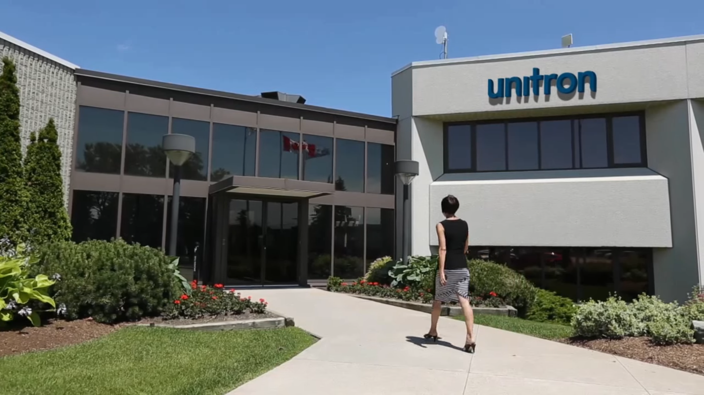

Elman Islam - Work Term Report
My Wonderful Experience at Sonova
Introduction
Welcome to my Work Term Report. This page outlines my experience working at Sonova as a Software Quality Assurance Analyst, from September 9, 2022 - December 24, 2022.
During my experience at Sonova, I learned a lot about quality assurance, specifically testing software. The products Sonova sells are super high-tech hearing instruments, and my job was to make sure the software for these devices was functioning properly.

20 Beasley Drive, Kitchener, Ontario, The office building where I worked at